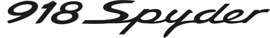

- 4.0L 6 cylinder engine
- 493 hp.
- 331 lb-ft of torque.
- 0-60 mph in 3.2 seconds
- 196 mph top speed.
- 7-speed dual-clutch automatic transmission.

What makes the Porsche 918 Spyder engine so special is the
naturally aspirated 4.6L V8
engine that spits out 608 hp and 398 lb-ft of torque on its own. With that being said, the Porsche 918
Spyder V8 engine is paired with a 129-hp front electric motor and a 156-hp rear electric motor, which
are fueled by a 6.8-kWh lithium-ion battery.
That combination is what allows the Porsche 918 Spyder to reach the 887 hp and 944 lb-ft of torque
figure we mentioned earlier. Inside the cabin, the Porsche 918 Spyder features a driver-focused design
with carbon-fiber seats, soft leather surfacing, and steering-wheel-mounted drive select knobs.
A razor-sharp track tool. A highly agile mid-engine concept with 4.0-litre displacement and a six-cylinder naturally aspirated engine. Six individual throttle valves for a direct response. A high-revving concept that easily scratches the 9,000 mark. An output of 368kW (500PS). Rational? Not always. Perfect? Always.
Since its introduction in 2002, the